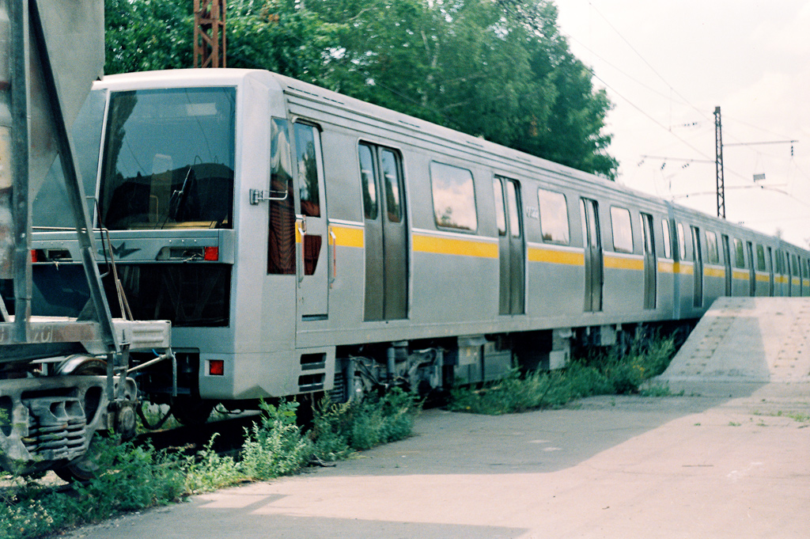

81-720А
Сегодня вы узнаете о необычной экспериментальной модификации "Яузы" — 81-720А. Этот поезд прожил лишь 10 лет, после чего был утилизирован. На нём испытывали экспериментальные приводы от разных производителей.
Общая информация
| Параметр | Значение |
|---|---|
| Город | Мытищи 🇷🇺 |
| Депо/Парк | АО «Метровагонмаш» |
| Модель | 81-720А «Яуза» |
| Построен | 01.2000 |
| Отставлен | 09.2003 |
| Списан | 2007 |
| Утилизирован | 2010 |
| Текущее состояние | Списан |
| Назначение | Служебный |
Состав поезда
0022-0123-0023
Трёхвагонный состав (головной-промежуточный-головной)
История испытаний
Поступление в метро
Поезд поступил в метрополитен через гейт ТЧ-2 "Сокол".
ТЧ-15 "Печатники"
Поезд поступил в депо ТЧ-15 для прохождения испытаний привода Alstom ONIX.
Возврат на завод
После окончания испытаний привода Alstom ONIX возвращён на завод.
Новое поступление
Поезд снова поступил в метрополитен через гейт ТЧ-2 "Сокол".
ТЧ-15 "Печатники"
Поезд поступил в ТЧ-15 для прохождения испытаний привода Hitachi.
Возврат на завод
После окончания испытаний привода Hitachi возвращён на завод.
Испытания КЭАТП-1
Испытания привода КЭАТП-1 на экспериментальном кольце ВНИИЖТ в Щербинке.
Утилизация
Поезд был утилизирован на территории ОАО "Метровагонмаш".
Три привода за 10 лет: Alstom ONIX → Hitachi → КЭАТП-1
Каждый из них испытывался на этом поезде, прежде чем было принято решение о дальнейшем развитии.
Экспериментальные приводы
Alstom ONIX
Испытания в начале 2000 года в ТЧ-15 "Печатники". Французский привод для вагонов метро.
Hitachi
Испытания в июне-конце 2002 года. Японский привод, также проходил тесты на этом составе.
КЭАТП-1
Испытания в мае-августе 2003 года на кольце ВНИИЖТ в Щербинке. Отечественная разработка.
Поезд 81-720А стал уникальной экспериментальной платформой, на которой тестировались приводы трёх разных производителей. Это позволило выбрать лучшее решение для дальнейшего развития подвижного состава.
Технические характеристики
Модель
81-720А
Составность
0022-0123-0023
Количество вагонов
3
Базовый тип
81-720/721 "Яуза"
Год утилизации
2010
Экспериментальные приводы
Alstom ONIX, Hitachi, КЭАТП-1
Фотогалерея

На экспериментальном кольце ВНИИЖТ в Щербинке.
Нажмите на фото для увеличения
«81-720А — уникальный поезд-испытатель. Всего 3 вагона, 10 лет жизни, 3 разных привода и множество километров испытаний. Он стал мостом между „Яузой“ и будущими поколениями поездов, но, к сожалению, не был сохранён для истории».